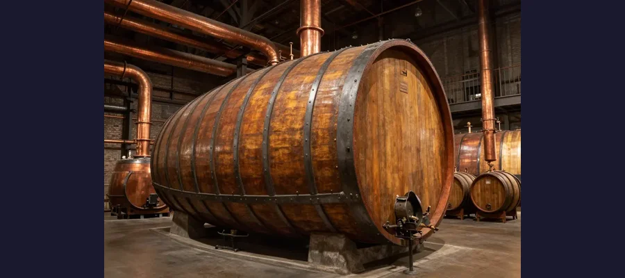
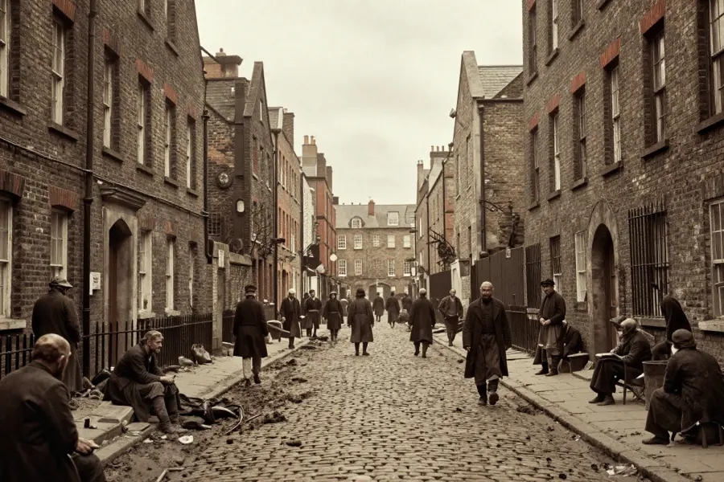

The London Beer Flood of 1814: A Wave of Destruction

On October 17, 1814, over 300,000 gallons of beer flooded the streets of London — destroying homes and killing eight people.
It sounds like the setup to a bizarre joke: a flood of beer sweeping through the streets of London. But on October 17, 1814, that’s exactly what happened. A massive vat at the Meux and Company Brewery on Tottenham Court Road ruptured, triggering a chain reaction that released over 320,000 gallons of beer into the surrounding neighborhood.
The resulting wave — some reports say it was 15 feet high — smashed through walls, destroyed homes, and killed eight people. It remains one of the strangest industrial disasters in history.
Overview
The Brewery and the Vat
The Meux and Company Brewery was one of London’s largest, located in the densely populated St Giles rookery — one of the city’s poorest slums. The brewery was famous for its enormous fermentation vats, which held vast quantities of porter, a dark beer popular with London’s working class.
The largest vat was truly massive:
- 📏 22 feet tall and 60 feet in circumference
- 🍺 Held approximately 3,555 barrels of beer (over 1 million pints)
- 🔗 Held together by 29 heavy iron hoops
- ⚖️ Contained liquid weighing over 700 tons

The brewery’s giant vats were tourist attractions in their own right — visitors would dine inside them when they were empty!
🎉 A Bizarre Attraction
Before the disaster, Meux’s giant vats were so famous that they became a tourist attraction. Visitors could pay to have dinner inside one of the enormous empty vats. One lavish dinner was said to have hosted over 200 guests inside a single vat!
The Disaster Unfolds
On the afternoon of October 17, 1814, storehouse clerk George Crick noticed that one of the iron hoops on the giant vat had slipped. This was not unusual — hoops needed periodic adjustment. He reported it to his supervisor, who told him it could wait.
Hours later, around 5:30 PM, the vat exploded. The force of the rupture blew apart the vat itself and sent a massive shockwave through the brewery. The flying debris knocked open several neighboring vats and casks, and within minutes, a tsunami of beer was pouring out of the brewery.

The St Giles rookery was a maze of overcrowded tenements, narrow alleys, and poorly constructed buildings — no match for a wall of beer.
Evidence
The Destruction
The beer flood devastated the surrounding neighborhood:
🏚️ New Street: Two houses were completely demolished by the force of the beer wave. A mother and her young daughter were killed when their home collapsed on top of them.
🍺 The Tavistock Arms pub: The wall of the pub collapsed, crushing a teenage girl named Eleanor Cooper who was washing pots in the yard.
💀 Death toll: Eight people were killed in total, including several who drowned in the beer, and others crushed by collapsing structures. Five of the victims were attending a wake for a child who had died the previous day.
Competing Explanations
Accident or Negligence?
The coroner’s inquest ruled the disaster an “Act of God” — essentially an unavoidable accident. But was it really unavoidable?
⚠️ Negligence argument: Crick had reported the damaged hoop hours before the explosion. His supervisor chose not to address it immediately. Some historians argue that timely repair could have prevented the catastrophe.
🔧 Engineering failure: The vats were built to enormous sizes that pushed the limits of wooden construction. The iron hoops were the only thing holding hundreds of tons of liquid. One slipped hoop could create a cascade failure.
🏭 Industrial greed: The brewery had incentive to build ever-larger vats to increase production. Safety may have taken a back seat to capacity.
🏛️ Legal Aftermath
In a controversial ruling, the coroner’s jury declared the deaths an “Act of God,” and the brewery was not held criminally liable. However, the company faced significant financial losses from the destroyed beer — and they were eventually compensated by Parliament for their losses, while the victims’ families received nothing.
Open Questions
Legacy of the Beer Flood
The London Beer Flood of 1814 contributed to the gradual improvement of industrial safety standards throughout the 19th century. It highlighted the dangers of storing massive quantities of liquid in wooden containers in densely populated areas.
The Meux Brewery was eventually demolished in 1922, and the site is now occupied by the Dominion Theatre on Tottenham Court Road. Today, a small pub called the “The Crosse Keys” in nearby St Giles serves as an informal memorial to one of history’s most bizarre disasters.
The London Beer Flood stands as a reminder that sometimes truth really is stranger than fiction — and that even the most beloved beverages can become deadly when industrial ambition outpaces safety.
References & Further Reading
- Wikipedia: London Beer Flood overview
- The British Museum: London in the Industrial Age
- History UK: The Great Beer Flood of 1814
- British Newspaper Archive: Contemporary reports from 1814
Editorial note: details about the London Beer Flood come from coroner’s records and contemporary newspaper accounts. See our Editorial Policy.